The Premier League 2015/16 after 20 games
All data correct as of 10 January 2016. I am grateful to everybody who has contributed data for this piece. Please follow up the linked websites or twitter profiles for a treasure trove of further numbers and insights.
England’s festive football fixtures are a wonderful thing. Between Christmas and New Year’s one match is coming after another, often resulting in thrilling encounters, while the table is changing all the time. Whereas the players continue their busy schedules with FA and League Cup ties, at least analysts of the Premier League can take a little breather and reflect upon the current standings.
So where are we at the start of the second half of the season? The biggest story so far has been Leicester’s rise and Chelsea’s fall. Both are truly remarkable, as nobody even had come close to predicting such events in pre-season. As the chart below shows [data from SportingIndex, compiled by @OmarChauduri], betting markets constantly had to re-evaluate their predicted season points for Leicester and Chelsea (both highlighted with bold lines; other top teams included for comparison):
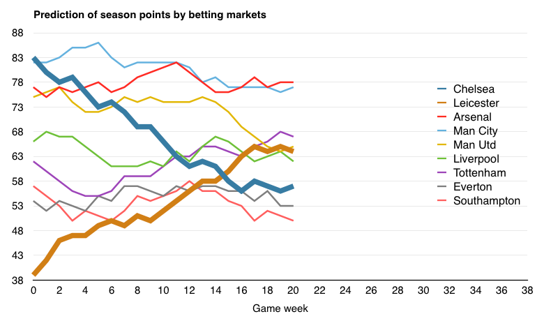Half-way through the season, many forecasters are still uncertain of how to judge Leicester and Chelsea. Will they revert to their ‘normal’ level soon enough, or will current trends prevail to the end?
Looking at the current Premier League table after 20 games, other surprise teams deserve plenty of plaudits too. In any other season, West Ham, Crystal Palace and Watford would have seen bigger headline news. The table below shows the current standings extrapolated to 38 games. For example, Watford’s 29 points after 20 games make it an excellent 1.45 points per game. If they sustained that rate in the 18 remaining games, then the Hornets would add another 26 points (1.45 x 18 = 26). In total, adding the 26 points to their 29 points already won, Watford’s extrapolated points after 38 games would be 55—way above any relegation fears.
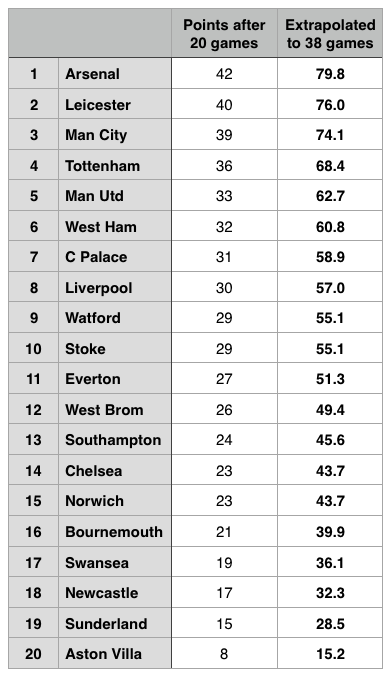Of course, simple extrapolation is not an ideal predictor. First, consider sample size: 20 games is just over half a season (52.6%), but this can still include a good deal of either random or un/lucky fluctuation. If we transferred the ratio of 20 out of 38 games to a 90-minute football game, then we would be in the 47th minute right now. Few football fans would celebrate victory just yet. [I have illustrated the league table’s significance here before.]
One way of broadening the sample size is to look at rolling 38-game data [thechels.co.uk maintains an always updated table]. At the moment, the Last 38 table consists of 20 games from this season and the last 18 games from last season. This season’s three promoted teams do not have any data for last season, of course. In fact, Bournemouth have never even played in the top division before.
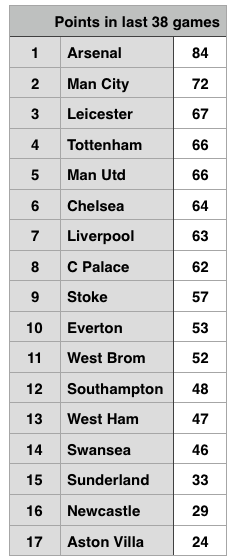The advantage of the Last 38 table is picking up early season trends. Leicester’s fantastic start to this season continued their fantastic finish last season. The bottom three (Aston Villa, Sunderland, Newcastle) barely escaped relegation last season and have carried on their bad form this season. The disadvantage of the Last 38 table is, however, that an uneven fixture list can provide false trends. Arsenal, for example, with a rather high 84 points in their last 38, might not sustain this trend much longer with tough fixtures coming up.
To account for fixture strength, one solution is to compare the same fixtures from season to season. Last season, for example, Arsenal drew at home against Manchester City. This season, in contrast, Arsenal got a home win over City. Comparing the same fixture, Arsenal are therefore 2 points better off than last season. The table below shows Arsenal’s 20 results this season compared to last season’s and calculates the difference.
One complication remains, however: newly promoted teams do not have an exact match for last season. The common method to tackle this problem is to replace promoted with relegated teams. For example, Bournemouth’s results this season are then compared to Hull’s results from last season.
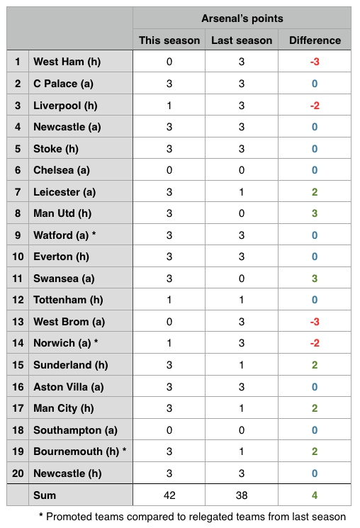Arsenal have won 42 points this season so far, 4 points more than in the same or comparable fixtures last season. Last season overall, Arsenal finished on 75 points after 38 games. With fixture comparison telling us that Arsenal are 4 points better this season, we could thus expect Arsenal to finish this season on 79 points.
With many thanks to @SimonGleave, who first came up with analysing such Season Comparative Results (SCoRe), below is the table with expected points for all Premier League teams:
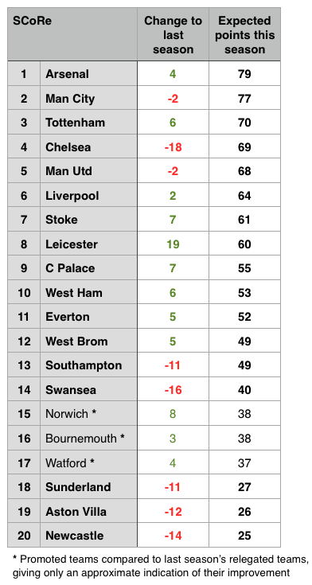Leicester’s rise (+19 points) and Chelsea’s fall (−18 pts) are again the two main stories of the season so far. The bottom three in the current table (Aston Villa, Sunderland, Newcastle) doing badly compared to last season is hardly surprising either. Also noteworthy are the downturns for Southampton and Swansea.
Finally, having looked earlier at the last 20 and 38 games, to get an even bigger picture it is worthwhile to compile some longer-term tables [statto.com is a useful website for such historical data]. The next two tables below add up all league points since the start of the 14/15 and 13/14 season respectively. In other words, they are the table for the Last 78 and Last 96 games. For better comparison, the bold numbers show points per 38 games. Example: Southampton have won 84 points in their last 58 games, which makes 1.45 points per game. Per 38 games, this amounts to 55 points (1.45 x 38 = 55).
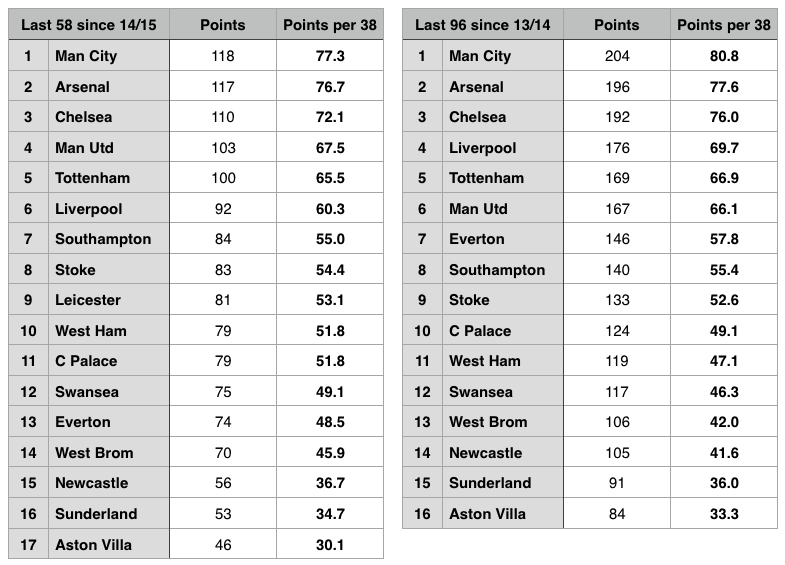In these long-term tables, Man City are slightly ahead of Arsenal. Former champions Chelsea fall to third place due to their dismal campaign this year. Three familiar clubs are at the bottom, with Aston Villa being particularly poor.
All in all, we have now a collection of 5 different tables based on past results, ranging from the short to the long run:
- the current table after 20 games for this season 2015/16, extrapolated to 38 games
- the rolling Last 38 game table, consisting of 20 games from 2015/16 and the last 18 games of the 14/15 season
- the SCoRe table of comparing the same or comparable 20 fixtures from this season to last season’s and extrapolating the difference to 38 games
- the Last 58 games table since the start of last season, 14/15, expressed in points per 38 games for comparison purposes
- the Last 96 games table since the start of the 13/14 season, also in per 38 games format
It’s time to compare them!
Since promoted teams do not have directly equivalent past results, I am focusing here on the top end of the table. However, as far as the relegation battle goes, there is a clear trio at the bottom based on available data: Aston Villa, Sunderland, Newcastle are bottom in all 5 tables.
The overview below lists the top 10 for each of the 5 categories, with 7 top clubs colour-coded for better comparison (all numbers refer to points per 38 games):
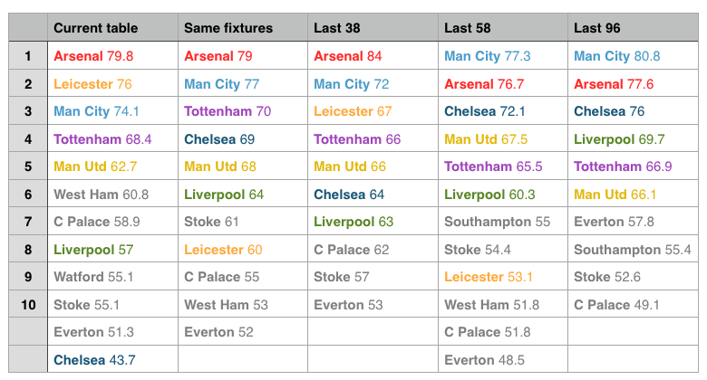Arsenal and Man City occupy almost all the places in 1st or 2nd, showing why many believe this season’s league title will come down to a two-horse race. Leicester are the big unknown: they are 2nd in the last 20 games, but 9th in the last 58; the truth might lie somewhere in between. It still takes a second look to realise how difficult it has become for post-Ferguson Man Utd to crack the top 4, let alone be a title contender. Tottenham, sometimes unnoticed, are very consistent but live right on the edge of 4th or 5th place. Crystal Palace have improved steadily. Whereas Everton and Southampton have not been able to maintain consistency at a high level. Stoke are perhaps the best example of a stable mid-table team in the Premier League.
Because it concerns the title race—and because I am an Arsenal fan—some further thoughts on Arsenal versus Man City. The table below compares our five metrics just for these two clubs as well as showing the difference in points per 38 games:
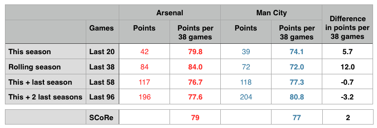And the same data in a different, graphical form:
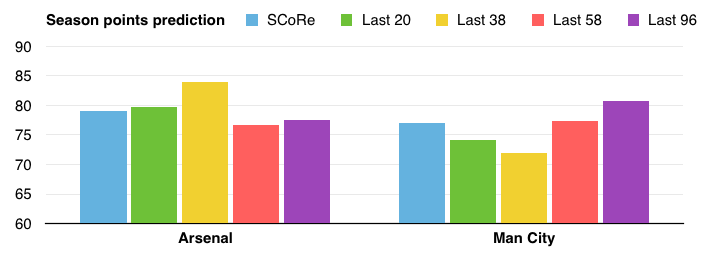In the current Last 38 table, Arsenal are 12 points ahead of Man City, which seems very high and likely an outlier due to uneven fixture lists. In the extrapolated current table, Arsenal’s advantage stands at only half of that (namely, just under 6 points). On a longer view, Man City are slightly ahead of Arsenal in the Last 58 and Last 96 respectively.
The big question is, whether Arsenal are improving (which is why their short-term trends are higher than their long-term ones) and/or whether Man City are somewhat in decline.
Looking back at season points of the past 5 years, as the chart below illustrates, Arsenal are mostly on an upward trend. Man City, meanwhile, do not look like repeating their two previous stand-out seasons (11/12 and 13/14) and might have reached a plateau at around 78-80 points.
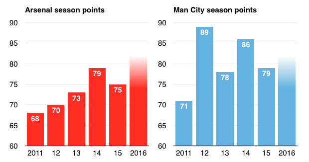* * *
So far, this piece has looked at past results to predict future outcomes. In the second part, the perspective now changes from results to performance.
Every football fan knows that results and performance are not always identical. Sometimes a team can play badly and yet still win. At other times, a great performance will not be rewarded with three points. Football is a low-scoring sport, making the margin between success and failure rather small. In the long run, results and performance usually fall together. But, in the short run at least, unusual winning or losing streaks can happen.
By definition, results are clearly measurable: either you have won a game 1-0 or not. In contrast, measuring performance is more complex and less objective. There are several types of events (shots, passes, interceptions, dribblings, etc), different types of spatial zones (in the box matters more than around the centre circle) and different types of score effects (when 2-0 up, some teams might decide to stop their attacking output voluntarily).
In short, measuring performance is not easy. But recent years have seen major advances in developing models that can cope with this complexity increasingly well. Luckily, moreover, many are publishing their numbers online and are sharing their insights with others in the analytics community.
In this article I am looking at some of the most well-known models from @Goalimpact, @11tegen11, @MC_of_A (Michael Caley), @soccermetric (Chad Murphy) as well as Infostrada’s @EuroClubIndex, which also uses Elo data, and a different sort of measurement in terms of betting data, compiled by @OmarChauduri. Again, I am grateful for having their data available here and I encourage all readers to look up the linked twitter accounts and websites for further information.
[I can also highly recommend this StatsBomb article by Constantinos Chappas comparing even more models, visualising very well the probability curves for each Premier League club.]
For a start, the tables below summarise all the current predictions:
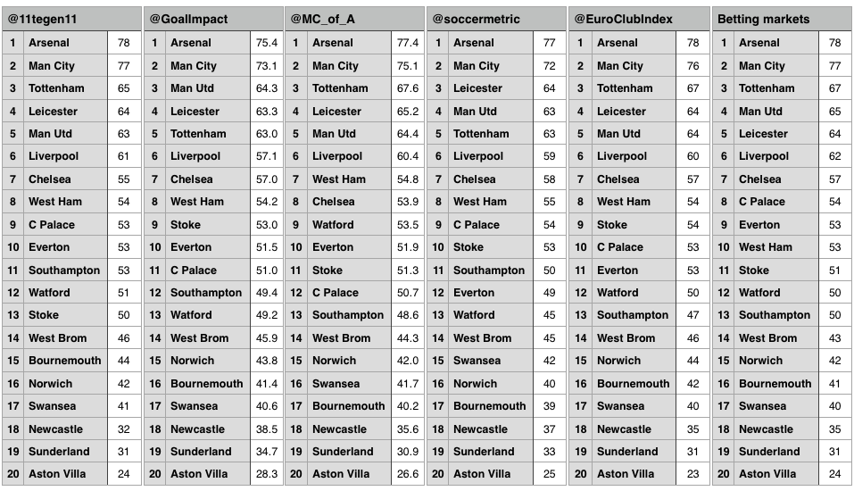A first glance across these 6 tables already reveals a great deal of shared predictions. All have Arsenal at 1st and Man City at 2nd, albeit mostly at small margins. All have the same trio of Aston Villa, Sunderland and Newcastle at the bottom destined for relegation.
For more detail, the overview below compares all rank predictions and calculates a median and mean for each team.
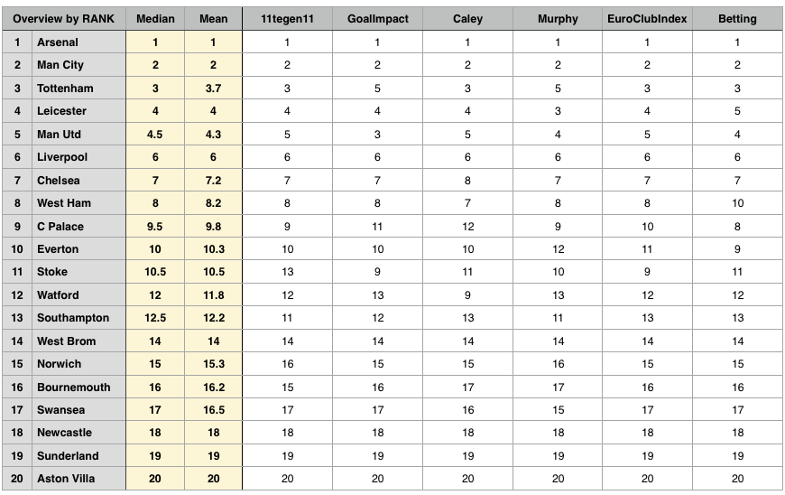Some rank predictions are perfectly in unison: Arsenal (1st), Man City (2nd), Liverpool (6th) at the top and Aston Villa (20th), Sunderland (19th), Newcastle (18th) at the bottom are identical across all six models. The battle for the two remaining Champions League places (3rd and 4th) is intense, however, and leads to some diverging forecasts: four models have Spurs at 3rd place, while the other two put them at 5th. Likewise, Leicester and Man Utd could be either 3rd or 5th, depending on which model you consult. In short, as the colour-coded table below illustrates, the top 8 teams are usually the same, but ranks 3 to 5 remain too close to call.

Ultimately, at the end of the season, ranks are all that matters to clubs and their fans. However, comparing points can give a more detailed view of the gap between teams. This overview summarises all points predictions from our six models:
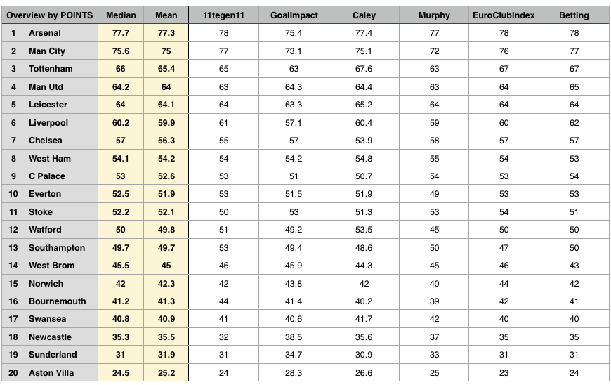A rule of thumb says that 80 points are the required minimum to win the Premier League; in recent years, the points total was often even higher. This year, however, appears to be a rather low-points season. Most models predict the champion to win with just 77 or 78 points, Goal Impact even just above 75 points. On the other hand, eventual league champions often hit form during the later parts of the season; and therefore the points total might still reach 80 points or above.
The chart below shows the median points prediction of the six models used here and makes it easier to identify different clusters.
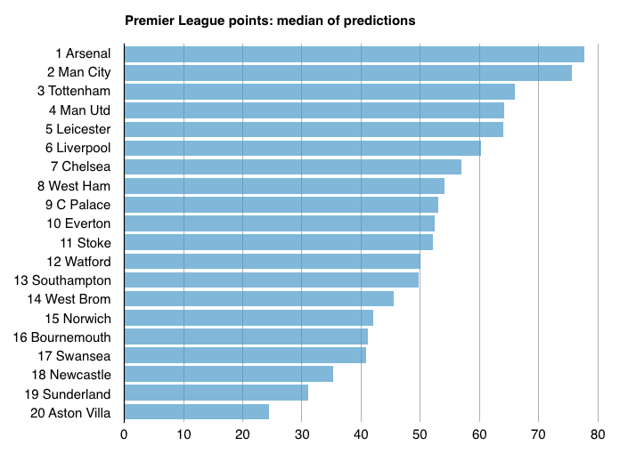The title race will be decided, in all likelihood, between Arsenal and Man City. Tottenham, Man Utd and Leicester might have an outsider chance, if they suddenly find exceptionally great form. More likely, Spurs, United and Leicester will be in a very tight battle for Champions League qualification. Liverpool and, although rather unlikely, maybe even Chelsea have a small outsider’s chance to get into the top four. Aston Villa look almost certain to be relegated. Sunderland and Newcastle need something of a miracle. Swansea, Bournemouth and Norwich are most threatened if Newcastle or Sunderland suddenly start winning streaks. West Brom should be okay. The rest are mid-table teams, safe from relegation but also not good enough for Champions League qualification: West Ham, Crystal Palace, Everton, Stoke, Watford (!) and Southampton.
* * *
The first part of this article looked at past results (such as Last 38 games) while the second part focused on performance models. To conclude, let’s compare them all. I start by looking at Arsenal.
The chart below gives us 11 different points predictions for Arsenal: the current table extrapolated, the comparison of same fixtures, the Last 38, 58, 96 games for longer trends, the models of 11tegen11, Goal Impact, Michael Caley, Chad Murphy, Euro Club Index and betting markets. The solid red line shows Arsenal’s median prediction (78 points).
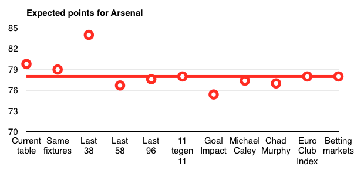Overall, most predictions are rather similar. As noted before, only the Last 38 table proves a major outlier in Arsenal’s case. Arsenal’s current table position extrapolated is a little bit higher than most forecasts. Goal Impact’s model starts off with a slightly lower points total, but Arsenal is 1st in its model too.
The two charts below are now showing the same data in comparison between Arsenal and Man City.
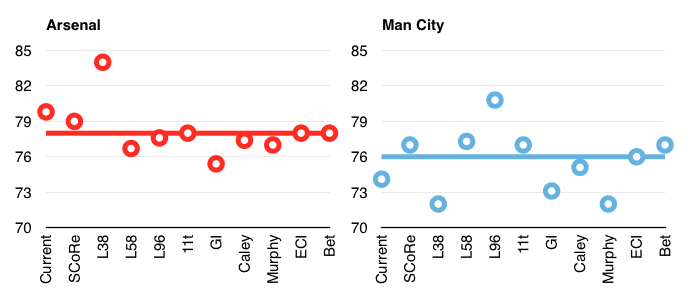Man City’s median prediction (76 points) is 2 points lower than Arsenal’s. City’s data points also exhibit greater variation: its Last 38 prediction is suspiciously low, whereas the long-term Last 96 games table is significantly higher. Is this just a temporary slump for City, or a fundamental shift downwards? We will know the answer at the end of the season... Also noteworthy is that Chad Murphy’s model is particularly pessimistic about City.
Another way to illustrate these variations is to look at the points difference between Arsenal and City, as in the chart below.
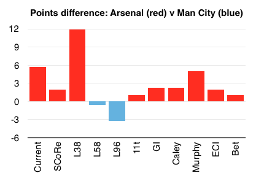In the Last 38 table, Arsenal (84 points) is 12 points above City (72 points). Chad Murphy’s model puts Arsenal 5 points above the Citizens. Most others estimate the difference at a much smaller 1 or 2 points.
Personally, even though as an Arsenal fan I am rather optimistic, I would still classify the title race as 50-50 between City and the Gunners. Arsenal are ahead in short-term indicators and performance models, but only by a small margin, and a longer perspective tells us that—in principle—Man City possess the ability to get above the 80 points needed for a title.
Putting all metrics together, the table below provides a full summary:
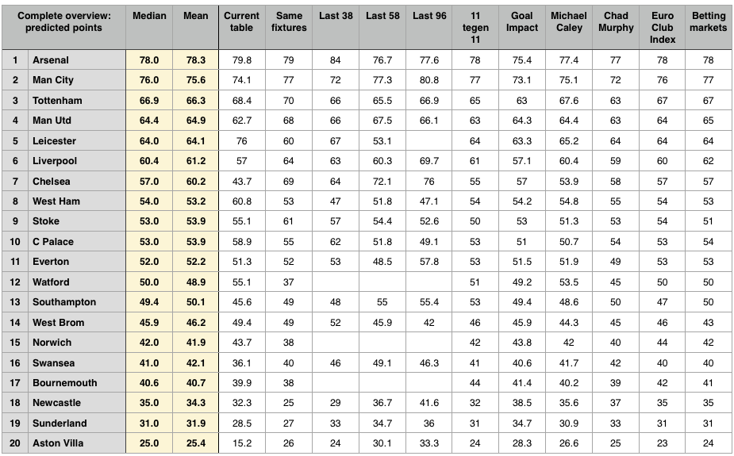In the chart below, the teams are ranked by their median points prediction (the red line). The mean value (the yellow line) rarely differs from the median, except in the case of Chelsea, which shows the highest variance here (because their current season represents such an enormous outlier).
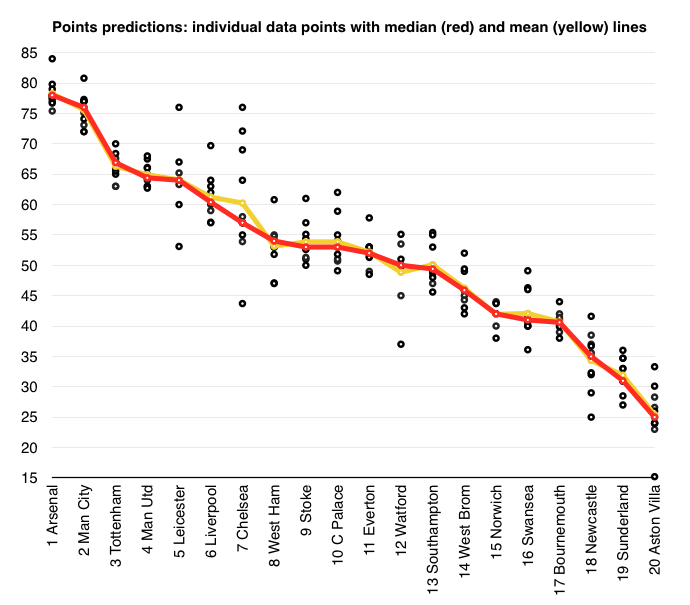* * *
Finally, a word regarding my own prediction: Before the season, I contributed my pre-season prediction (shown on the left below) to Simon Gleave’s annual collection. Of course, at half-time, I am already looking foolish with some forecasts: I expected Leicester to be relegated with 36 points—and today the Foxes already have 40 points and are fighting for a top 4 finish. I thought Chelsea would get fewer points than last season but never imagined Mourinho’s third-season syndrome would become so bad. I was equally wrong about Watford; and a few other clubs as well. On a positive note, I expected (or hoped) Arsenal to get 80 points and be a close contender in the title race.
On the right side, next to my pre-season prediction, I have come up with another prediction after 20 games.
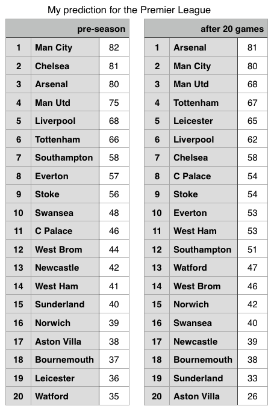Mainly due to intuition, I depart in a few cases from the broader statistical trends. I think Man Utd will recover and regain 3rd place, which they seemed to have locked up some weeks ago. The form of Tottenham, as often in the past, and Leicester, as often with surprise teams, might cool down in the second half of the season. Similarly, I expect Watford and Bournemouth to run out of steam somewhat, which might be fatal for the Cherries if—as I think might happen—a team like Newcastle, who should be higher up in the table given their squad strength, get some momentum. However, Swansea could easily become the victim too, especially if their managerial uncertainty continues.
As observed before, short-term indicators currently favour Arsenal over City in the title race, albeit at a small margin. But Man City’s long-term numbers show what they are capable of in principle. It certainly will be very close. Like in 2012, goal difference (currently favouring City) might decide the title. Or the direct duel in game week 37 (also favouring City as the home team). As an Arsenal fan, I naturally hope it will finish with a happy end.
One of the joys this season has been that the Premier League is more unpredictable than before, and more unpredictable than many other top leagues in Europe. Looking at the numbers, as in this piece, can help us to make out some big trends. Ultimately, however, a good deal of uncertainty remains—and so we can enjoy the drama of the next 18 games!